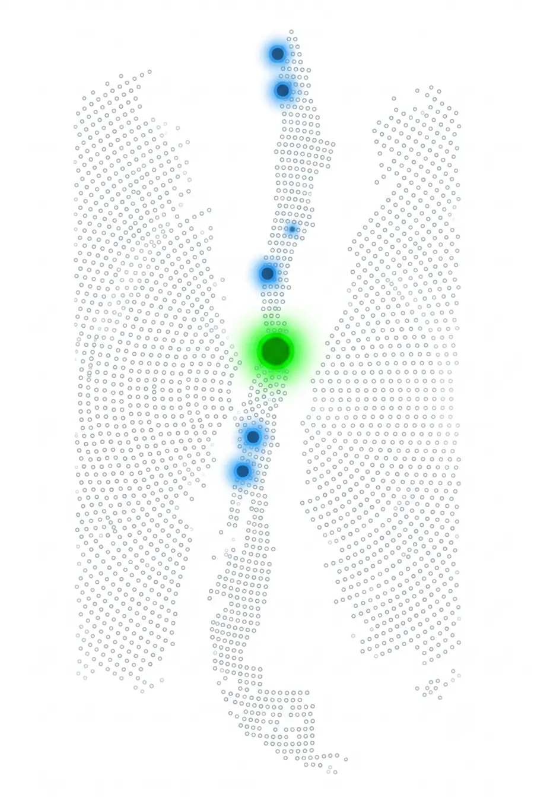

Soluciones industriales
Ingeniería que se pone en marcha
Maquinaria, fabricación y acompañamiento técnico para llevar cada proyecto a operación.
Ver solucionesMaquinaria, fabricación y acompañamiento técnico para llevar cada proyecto a operación.
Ver solucionesTe acompañamos personalmente en la selección, instalación, puesta en marcha y primeras pruebas. El objetivo es que el equipo quede trabajando y que tu operación sepa cómo aprovecharlo.
Conversar sobre mi proyectoSí. La modalidad puede ser suministro local o importación a pedido y se confirma con el modelo, configuración, accesorios y plazo de cada proyecto.
Sí. MAQELEC también ejecuta corte, punzonado, mecanizado, soldadura, reparación, fabricación y terminaciones.
Sí. Según el equipo y el alcance, puede contemplar montaje, configuración, primeras pruebas y orientación inicial al operador.
Los suministros, instalaciones y proyectos en otras regiones de Chile se evalúan según ubicación, logística y condiciones técnicas.
Desde nuestra base en Santiago coordinamos suministros, instalaciones y trabajos industriales según el alcance y las condiciones de cada proyecto.

Selección según proceso y necesidad.
Configuración, pruebas y entrega.
Uso seguro y productivo.
Asistencia técnica y repuestos.
Proyectos coordinados en terreno.